| Padányi Milán | FMUL84 | mpadanyi09@gmail.com |
| Ujfalussy Kristóf | ZZORDN | kristof.ujfalussy@student.uni-miskolc.hu |
| Kecskés Gábor | QDY6TL | gabor.kecskes@student.uni-miskolc.hu |
| Lengyel János | N9XZKQ | lengyeljanos2004@gmail.com |
| Laczkó Norbert | SLIIKD | laczkonorbert4@gmail.com |
| Dátum | Verzió | Leírás | Szerző |
|---|---|---|---|
| 2026-10-18 | 1.0 | Létrejött a dokumentum. | Lengyel János |
| 2026-10-19 | 1.1 | 1-2. pont megírása (bevezetés, a dokumentum célja, mi tartozik a projektbe és mi nem, fogalmak, a rendszer általános leírása, felhasználók, környezet, megszorítások). | Ujfalussy Kristóf |
| 2026-10-20 | 1.2 | Összegyűjtöttük a funkcionális követelményeket modulonként (4. pont, 39 db) és fontosság szerint besoroltuk őket. Elkészültek a használati esetek és a legfontosabbak részletes leírása (5. pont). | Kecskés Gábor Laczkó Norbert |
| 2026-10-21 | 1.3 | Külső kapcsolatok (3. pont): felület, külső rendszerek, a fontosabb API végpontok. Nem funkcionális követelmények (9. pont). | Laczkó Norbert |
| 2026-10-22 | 1.4 | Az adatbázis-terv átdolgozása (7. pont): az ER-diagramot UML jelöléssel újrarajzoltuk és kiegészítettük a hiányzó táblákkal (Termek, Székek, Vetítések, Technológiák, Értékelések, Büfé rendelések). Üzleti szabályok (8. pont). | Padányi Milán Kecskés Gábor |
| 2026-10-24 | 1.5 | A diagramok megrajzolása (kontextus-, használati eset-, szekvencia-, állapot-, aktivitás-, architektúra- és Gantt-diagram) és beillesztése a dokumentumba. | Lengyel János |
| 2026-10-26 | 1.6 | Követelmények összesítő táblázata (10. pont), elfogadási feltételek (11. pont). A dokumentum átnézése, hibák javítása, szótár kiegészítése. | Kecskés Gábor Ujfalussy Kristóf |
Amit a rendszer tud:
Amit a rendszer nem csinál:
| Rövidítés / Fogalom | Jelentés |
|---|---|
| SRS | Szoftver Követelmény Specifikáció (ez a dokumentum). |
| FK-xx | Funkcionális követelmény azonosítója. |
| NFK-xx | Nem funkcionális követelmény azonosítója. |
| UC-xx | Használati eset (Use Case) azonosítója. |
| ÜSZ-xx | Üzleti szabály azonosítója. |
| EK-xx | Elfogadási feltétel (kritérium) azonosítója. |
| M / S / C | A követelmények fontossága: kötelező / fontos / ha marad idő (MoSCoW módszer). |
| Vendég / Dolgozó / Admin | A három jogosultsági szint (0 / 1 / 2) a Felhasználók táblában. |
| Zárolás | Amikor egy széket ideiglenesen lefoglalunk a vendégnek, amíg fizet. |
| E-jegy | A vásárlás után kapott digitális jegy QR-kóddal. |
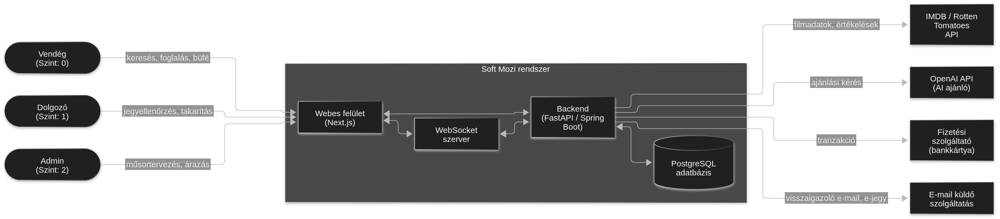
Vendég felület:
Dolgozói felület (tablet):
Admin felület:
| Rendszer | Mire használjuk | Hogyan kapcsolódunk |
|---|---|---|
| IMDB / Rotten Tomatoes API | Filmadatok és értékelések | REST API, naponta egyszer frissítjük |
| OpenAI API | AI filmajánló | REST API, amikor a felhasználó kér ajánlást |
| Fizetési szolgáltató | Bankkártyás fizetés | REST API, minden vásárlásnál |
| E-mail küldő szolgáltatás | Regisztráció megerősítése, e-jegy küldése | REST API |
| PostgreSQL | Az adatok tárolása | A backendből |
| Metódus | Végpont | Mire jó | Ki használhatja |
|---|---|---|---|
| POST | /api/regisztracio | Regisztráció | Bárki |
| POST | /api/bejelentkezes | Bejelentkezés | Bárki |
| GET | /api/mozik | Mozik listája régiónként | Bárki |
| GET | /api/mozik/{id}/musor | Egy mozi műsora | Bárki |
| GET | /api/filmek/{id} | Filmadatlap | Bárki |
| GET | /api/vetitesek/{id}/szekek | A terem székei | Bárki |
| POST | /api/rendelesek | Kosár elküldése, fizetés | Vendég |
| GET | /api/profil/jegyek | Saját jegyek és pontok | Vendég |
| POST | /api/jegyek/ellenorzes | Jegy ellenőrzése a bejáratnál | Dolgozó |
| POST | /api/admin/vetitesek | Új vetítés felvétele | Admin |
| GET | /api/admin/statisztikak | Statisztikák | Admin |
A WebSocket kapcsolatot arra használjuk, hogy a szerver azonnal szólni tudjon a böngészőnek, például ha valaki lefoglalt egy széket, vagy ha egy takarítónak új feladata van. A fontosabb üzenetek:
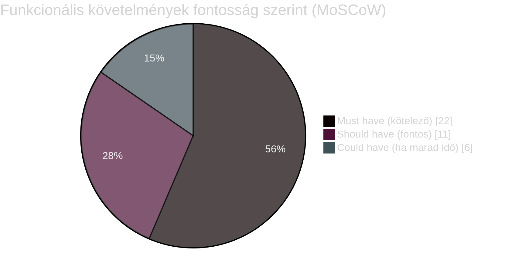
| Azonosító | Követelmény | Fontosság |
|---|---|---|
| FK-01 | Regisztráció névvel, e-mail címmel, jelszóval és születési dátummal. Az e-mail címet egy linkkel kell megerősíteni. | M |
| FK-02 | Bejelentkezés e-mail címmel és jelszóval. | M |
| FK-03 | Elfelejtett jelszó esetén új jelszót lehessen beállítani egy e-mailben kapott linkkel. | S |
| FK-04 | A felhasználó módosíthassa a nevét, telefonszámát és profilképét. | C |
| FK-05 | A felhasználó beállíthassa a kedvezményét (diák, nyugdíjas, gyerek). A nyugdíjas és gyerek kedvezménynél a rendszer a születési dátumot is ellenőrzi. | M |
| FK-06 | Mindenki csak azt lássa és használja, amihez a jogosultsága (0, 1, 2) alapján joga van. | M |
| FK-07 | A felhasználó törölhesse a fiókját. Ilyenkor a személyes adatait töröljük, de a vásárlásai név nélkül megmaradnak. | M |
| Azonosító | Követelmény | Fontosság |
|---|---|---|
| FK-08 | Mozik keresése régió és város alapján. | M |
| FK-09 | Egy mozi napi műsorának megjelenítése a kezdési időkkel, nyelvvel és technológiával (2D, 3D, IMAX, 4DX). | M |
| FK-10 | Filmadatlap: cím, rendező, játékidő, korhatár, bemutató, műfajok, leírás, trailer link. | M |
| FK-11 | A műsor szűrése műfaj, technológia, nyelv (szinkronos / feliratos) és napszak szerint. | S |
| FK-12 | Az IMDB értékelés megjelenítése a filmadatlapon. | S |
| FK-13 | A vendég 1-5 csillaggal értékelhet egy filmet, de csak akkor, ha látta (volt rá felhasznált jegye). | S |
| FK-14 | A trailert az oldalon belül is meg lehessen nézni. | C |
| Azonosító | Követelmény | Fontosság |
|---|---|---|
| FK-15 | A terem térképének megjelenítése a székekkel (sor, szám) és azok állapotával. | M |
| FK-16 | Ha a vendég kiválaszt egy széket, a rendszer zárolja, és a többi vendégnél is rögtön foglaltként jelenik meg (WebSocket). | M |
| FK-17 | Ha a vendég 10 percen belül nem fizet, vagy kiveszi a kosárból, a szék újra szabad lesz. | M |
| FK-18 | Egyszerre legfeljebb 10 jegyet lehessen venni. | M |
| FK-19 | Fizetés után a vendég e-jegyet kap QR-kóddal, e-mailben és a profiljában is. | M |
| FK-20 | A jegyet a vetítés előtt legalább 2 órával le lehessen mondani, ilyenkor visszakapja a pénzét. | S |
| FK-21 | Az AI ajánló a korábbi vásárlások és értékelések alapján ajánljon filmeket és vetítéseket (a korhatárt figyelembe véve). | S |
| Azonosító | Követelmény | Fontosság |
|---|---|---|
| FK-22 | A büfé termékek megjelenítése az adott mozi saját áraival (Árak tábla). | M |
| FK-23 | A jegyek és a büfé termékek egy kosárba kerülnek, és egyszerre lehet kifizetni őket. | M |
| FK-24 | A büfé rendelést a helyszínen a QR-kóddal lehessen átvenni. | C |
| FK-25 | A termékekhez extrát lehessen választani (pl. sajtszósz, nagyobb méret). | C |
| Azonosító | Követelmény | Fontosság |
|---|---|---|
| FK-26 | A kedvezményt (Kedvezmények tábla, százalék) a rendszer automatikusan levonja a jegy árából. A büfére nem jár kedvezmény. | M |
| FK-27 | A fizetés a külső fizetési szolgáltatónál történik, mi csak az eredményt kapjuk meg. | M |
| FK-28 | Dinamikus árazás: a jegy ára változhat a napszak és a terem telítettsége alapján. | S |
| FK-29 | Hűségpontok: minden 100 Ft után 1 pont jár, 100 pont = 500 Ft kedvezmény a következő vásárlásnál. | S |
| FK-30 | A vásárlásról letölthető legyen egy PDF nyugta. | C |
| Azonosító | Követelmény | Fontosság |
|---|---|---|
| FK-31 | Régiók, mozik, termek és székek felvétele, módosítása és törlése. | M |
| FK-32 | Műsortervező: új vetítést csak akkor lehessen elmenteni, ha nem ütközik egy másikkal ugyanabban a teremben (a takarítási időt is beleszámolva). | M |
| FK-33 | A büfé árakat mozinként külön lehessen beállítani. | M |
| FK-34 | Statisztikák mozinként és régiónként: bevétel, eladott jegyek, büfé eladások, grafikonokkal. | S |
| FK-35 | Az admin módosíthassa a felhasználók jogosultságát, és a dolgozókat mozihoz rendelhesse. | M |
| FK-36 | A statisztikákat le lehessen tölteni táblázatként (CSV). | C |
| Azonosító | Követelmény | Fontosság |
|---|---|---|
| FK-37 | A dolgozó beolvassa a jegy QR-kódját, a rendszer megmondja, hogy érvényes-e (jó vetítésre, jó moziba szól, és még nem használták fel), majd felhasználtnak jelöli. | M |
| FK-38 | A film végén a rendszer értesíti a takarítókat, akik a "Rendben" gombbal jelzik, hogy végeztek. | S |
| FK-39 | A dolgozó bejelentheti, ha egy szék elromlott. Ekkor a széket nem lehet eladni, és a szerelő értesítést kap. | S |
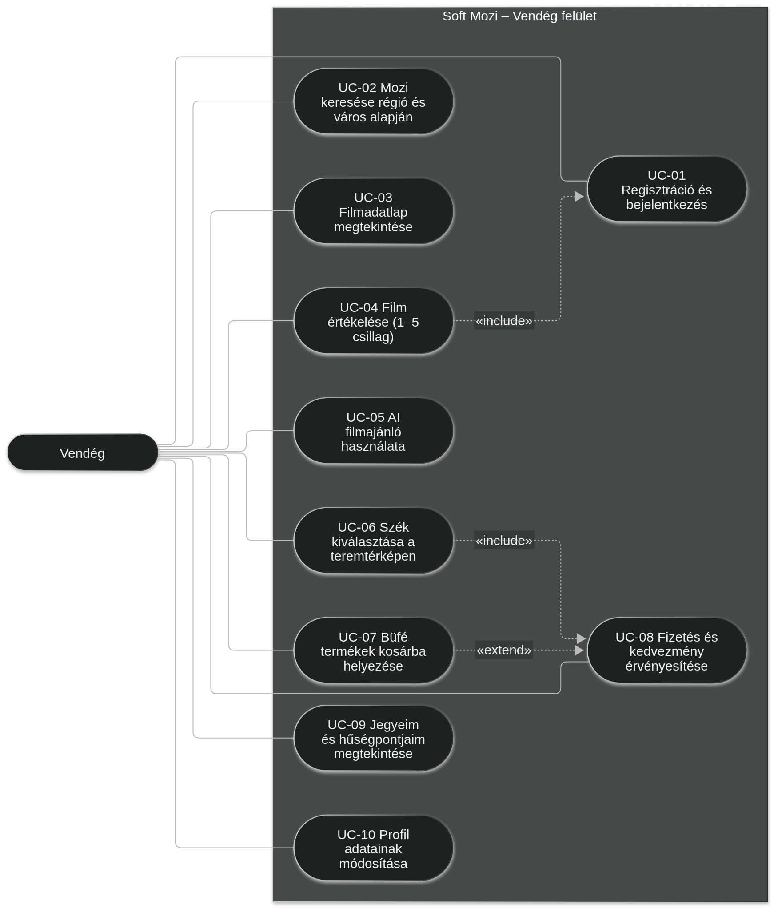
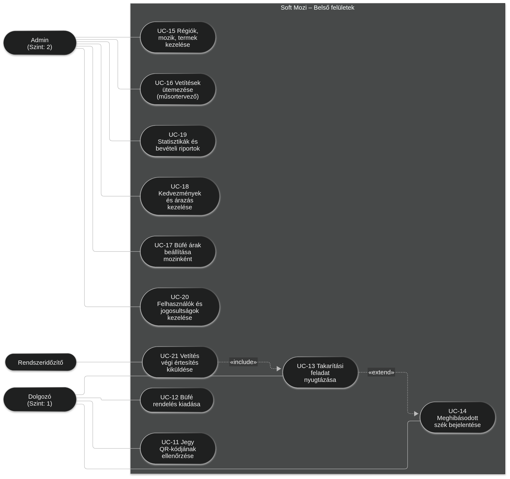
| Szereplő | Vendég, Fizetési szolgáltató |
| Előfeltétel | A vendég be van jelentkezve, és van még szabad szék a vetítésre. |
| Lépések |
1. A vendég kiválaszt egy vetítést. 2. Megjelenik a teremtérkép. 3. A vendég kiválaszt egy vagy több szabad széket. 4. A rendszer 10 percre zárolja a székeket. 5. A vendég kiválasztja a jegy típusát (teljes árú vagy kedvezményes), és ha akar, büfét is tesz a kosárba. 6. A rendszer kiírja a végösszeget. 7. A vendég a fizetésre kattint, és a fizetési szolgáltató oldalán fizet. 8. Sikeres fizetés után a rendszer elmenti a jegyeket, a székek foglaltak lesznek, a vendég pontokat kap. 9. A vendég megkapja az e-jegyet. |
| Ha valami máshogy történik |
3a. Valaki közben lefoglalta a széket: hibaüzenet, másik széket kell választani. 4a. Letelik a 10 perc: a székek felszabadulnak, elölről kell kezdeni. 5a. A film korhatáros és a vendég túl fiatal: nem mehet tovább (ÜSZ-04). 7a. Sikertelen a fizetés: nem jön létre jegy, a vendég újra próbálkozhat, amíg tart a zárolás. |
| Eredmény | A jegyek érvényesek, a székek foglaltak. |
| Követelmények | FK-15, FK-16, FK-17, FK-18, FK-19, FK-23, FK-26, FK-27, FK-29 |
| Szereplő | Látogató vagy Vendég |
| Előfeltétel | Nincs, bejelentkezés nélkül is megy. |
| Lépések |
1. A felhasználó megnyitja a főoldalt. 2. Kiválasztja a régiót, majd a várost. 3. A rendszer kilistázza a város moziait. 4. A felhasználó kiválaszt egy mozit és egy napot. 5. Megjelenik a napi műsor, amit szűrni is lehet (műfaj, nyelv, technológia). |
| Ha valami máshogy történik | 5a. Aznap nincs vetítés: a rendszer a következő napot ajánlja, amikor van. |
| Eredmény | A felhasználó látja a műsort, és innen tud jegyet venni (UC-06). |
| Követelmények | FK-08, FK-09, FK-11 |
| Szereplő | Dolgozó (jegyszedő) |
| Előfeltétel | A dolgozó be van jelentkezve a tableten. |
| Lépések |
1. A dolgozó megnyomja a "Beolvasás" gombot. 2. A vendég megmutatja a QR-kódot. 3. A rendszer megnézi, hogy a jegy érvényes-e, és erre a moziba, erre a vetítésre szól-e. 4. Zöld képernyő jelenik meg a film címével, a teremmel és a székkel. 5. A jegy felhasznált lesz. |
| Ha valami máshogy történik |
3a. A jegyet már felhasználták: piros képernyő. 3b. A jegy másik moziba vagy másik vetítésre szól: piros képernyő a helyes adatokkal. 4a. Kedvezményes a jegy: a rendszer szól, hogy meg kell nézni az igazolványt. |
| Eredmény | A jegyet nem lehet még egyszer felhasználni. |
| Követelmények | FK-37, ÜSZ-07 |
| Szereplő | Rendszeridőzítő, Dolgozó (takarító, szerelő) |
| Előfeltétel | Véget ért egy vetítés, és van bejelentkezett takarító a moziban. |
| Lépések |
1. A Rendszeridőzítő jelzi, hogy vége a filmnek. 2. A terem állapota "takarításra vár" lesz. 3. A takarítók értesítést kapnak a tableten. 4. Egy takarító elvállalja a feladatot. 5. Ha végzett, megnyomja a "Rendben" gombot. 6. A terem újra kész a következő vetítésre. |
| Ha valami máshogy történik |
4a. 5 percen belül senki nem vállalja: újra szól a rendszer, és az admin is értesítést kap. 5a. A takarító elromlott széket talál: bejelenti (UC-14), a szék hibás lesz, a szerelő értesítést kap. |
| Eredmény | A terem tiszta, a hibás székeket nem lehet eladni. |
| Követelmények | FK-38, FK-39, ÜSZ-08 |
| Szereplő | Admin |
| Előfeltétel | Az admin be van jelentkezve, a mozi, a termek és a film már fel vannak véve. |
| Lépések |
1. Az admin megnyitja a műsortervezőt, kiválaszt egy mozit és egy hetet. 2. Látja termenként a meglévő vetítéseket. 3. Behúz egy filmet a kiválasztott terembe és időpontra. 4. Megadja a nyelvet és a technológiát. 5. A rendszer megnézi, hogy nem ütközik-e egy másik vetítéssel. 6. A vetítés elmentődik, és megjelenik a műsorban. |
| Ha valami máshogy történik |
5a. Ütközik egy másik vetítéssel: piros lesz, nem lehet elmenteni, a rendszer felajánl egy szabad időpontot. 6a. Olyan vetítést módosít, amire már vettek jegyet: a rendszer rákérdez, és értesíti a vendégeket. |
| Eredmény | A vetítés bekerül a műsorba, lehet rá jegyet venni. |
| Követelmények | FK-31, FK-32, ÜSZ-08 |
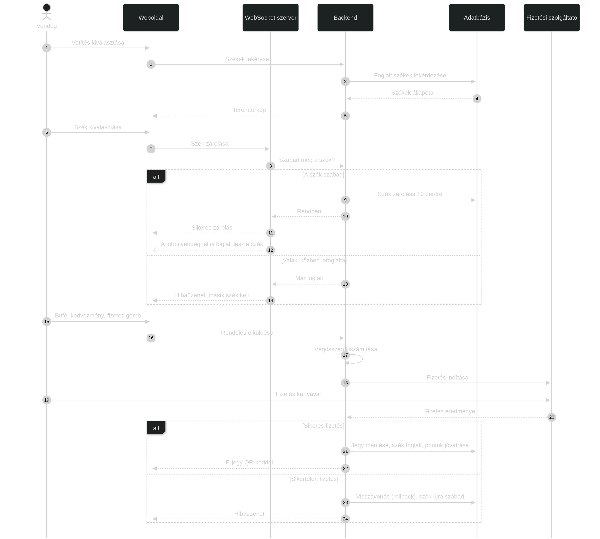
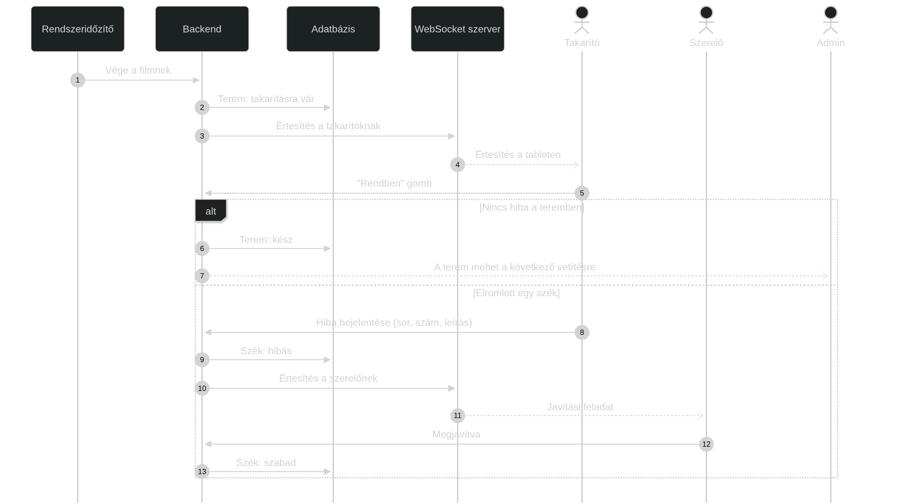
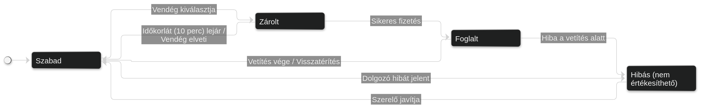
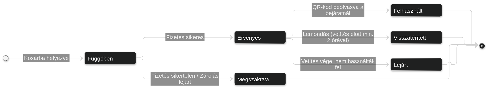
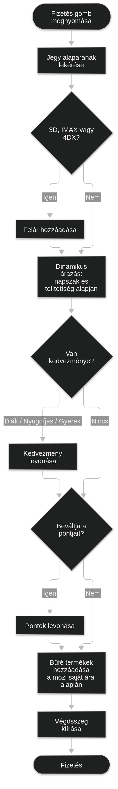
A diagramon használt UML kapcsolatok:
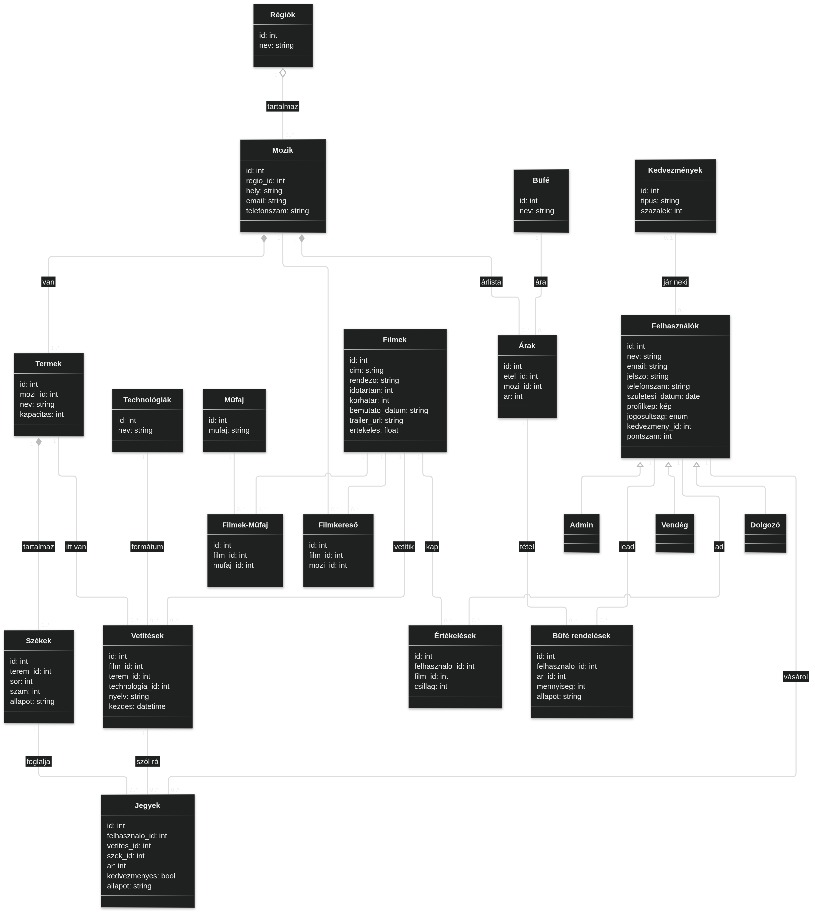
| Tábla | Mit tárol | Megjegyzés |
|---|---|---|
| Régiók | A hálózat régiói (pl. Észak-Magyarország). | A név nem ismétlődhet. |
| Mozik | A mozik címe és elérhetőségei. | Mindig egy régióhoz tartozik. |
| Termek | A mozik termei. | A kapacitás = a terem székeinek száma. |
| Székek | A terem székei sor és szám szerint. | Egy teremben egy sor-szám páros csak egyszer lehet. |
| Filmek | A filmek adatai (IMDB-ből frissítve). | Korhatár: 0, 6, 12, 16, 18. |
| Műfaj, Filmek-Műfaj | A műfajok, és hogy melyik film melyik műfajba tartozik. | Egy filmnek több műfaja is lehet. |
| Technológiák | 2D, 3D, IMAX, 4DX. | Mindegyikhez tartozik egy felár. |
| Vetítések | Melyik film, melyik teremben, mikor, milyen nyelven és technológiával megy. | Egy teremben nem lehet két vetítés egyszerre (ÜSZ-08). |
| Felhasználók | Minden felhasználó, a jogosultságtól függetlenül. | Az e-mail cím egyedi, a jelszót titkosítva tároljuk. |
| Kedvezmények | A kedvezmény típusa és százaléka. | Diák, nyugdíjas, gyerek. |
| Jegyek | A megvett jegyek. | Egy székre egy vetítésre csak egy érvényes jegy lehet. |
| Értékelések | A vendégek csillagos értékelései. | Egy vendég egy filmet egyszer értékelhet. |
| Büfé, Árak | A büfé termékei és azok árai mozinként. | Ugyanaz a termék mozinként más árú lehet. |
| Büfé rendelések | A kosárba tett büfé termékek. | Állapot: függőben / kifizetve / kiadva. |
| Filmkereső | Melyik film melyik moziban megy. | A kereséshez kell, a vetítésekből frissül. |
| Azonosító | Szabály |
|---|---|
| ÜSZ-01 | Diák kedvezmény 26 éves korig jár, diákigazolvánnyal. |
| ÜSZ-02 | Gyerek kedvezmény 14 év alatt, nyugdíjas kedvezmény 65 év felett jár. |
| ÜSZ-03 | Egy jegyre csak egy kedvezmény használható, de a hűségpontokat mellette is be lehet váltani. |
| ÜSZ-04 | Korhatáros (16, 18) filmre csak az vehet jegyet, aki a születési dátuma alapján elég idős. |
| ÜSZ-05 | A dinamikus árazás nem térhet el túl nagyon az alapártól (legfeljebb 30%-kal olcsóbb vagy 25%-kal drágább). |
| ÜSZ-06 | Jegyet a vetítés előtt legalább 2 órával lehet lemondani, ilyenkor a büfé ára is visszajár. |
| ÜSZ-07 | A beengedés a vetítés előtt 30 perccel kezdődik, és a kezdés után 20 percig tart. |
| ÜSZ-08 | Két vetítés között ugyanabban a teremben legalább 20 percnek kell lennie a takarítás miatt. |
| ÜSZ-09 | A hűségpontok 1 évig érvényesek. Ha a vásárlást lemondják, a pontokat levonjuk. |
| ÜSZ-10 | A dolgozó csak a saját mozijának adatait láthatja. |
| Azonosító | Fajta | Követelmény | Hogyan ellenőrizzük |
|---|---|---|---|
| NFK-01 | Sebesség | A szerver általában 200 ms alatt válaszoljon. | Terheléses teszt |
| NFK-02 | Sebesség | A teremtérkép telefonon is 2 másodpercen belül betöltődjön. | Kézi tesztelés |
| NFK-03 | Valós idő | Ha valaki lefoglal egy széket, az kb. 1 másodpercen belül látszódjon a többieknél is. | Integrációs teszt |
| NFK-04 | Terhelhetőség | Premierkor is működjön, amikor sokan (akár 1000+ ember) vesznek jegyet egyszerre. | Terheléses teszt |
| NFK-05 | Elérhetőség | A rendszer a nap 24 órájában elérhető legyen (99,9%). | Folyamatos figyelés |
| NFK-06 | Biztonság | HTTPS kapcsolat, a jelszavakat titkosítva (bcrypt) tároljuk, bejelentkezés JWT tokennel. | Biztonsági tesztelés |
| NFK-07 | Biztonság | A szerver minden kérésnél ellenőrizze, hogy a felhasználónak van-e joga az adott művelethez. | Biztonsági tesztelés |
| NFK-08 | Megbízhatóság | Egy széket egy vetítésre soha ne lehessen kétszer eladni (ACID tranzakció). | Integrációs teszt |
| NFK-09 | Használhatóság | Egy új felhasználó segítség nélkül, pár perc alatt tudjon jegyet venni. | Felhasználói elfogadási teszt |
| NFK-10 | Kompatibilitás | Működjön a modern böngészőkben, telefonon is. | Kézi tesztelés |
| NFK-11 | Karbantarthatóság | A fontos számításokhoz (jegyár, kosár, kedvezmény) legyenek unit tesztek, a kódot Giten tároljuk. | Unit tesztek |
| NFK-12 | Adatvédelem | A rendszer feleljen meg a GDPR-nak (adatkezelési tájékoztató, fiók törlése). | Ellenőrzőlista |
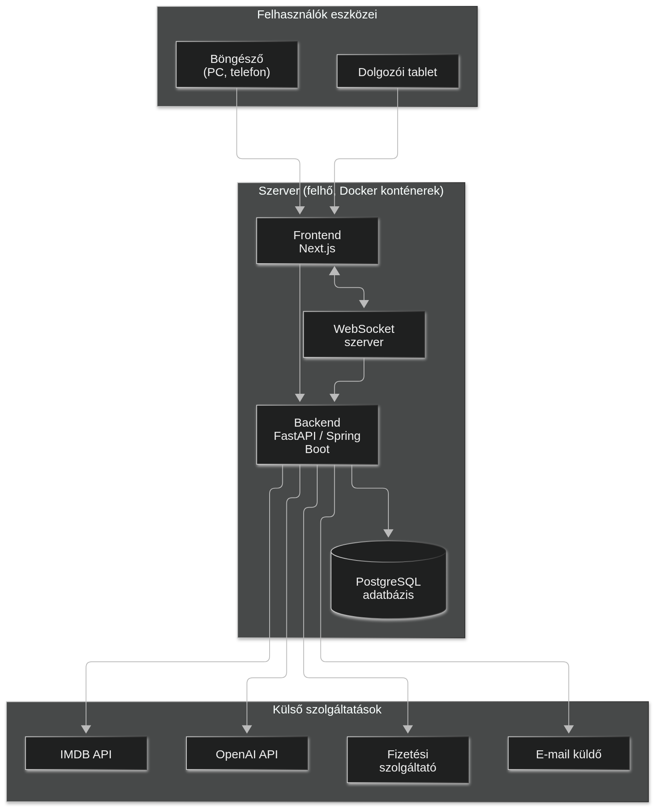
| Használati eset | Követelmények | Modul | Mérföldkő | Elfogadási feltétel |
|---|---|---|---|---|
| UC-01 Regisztráció és bejelentkezés | FK-01, FK-02, FK-03, FK-06 | Felhasználókezelés | 1. | EK-01 |
| UC-02 Mozi keresése | FK-08, FK-09, FK-11 | Felfedező | 1. | EK-02 |
| UC-03 Filmadatlap | FK-10, FK-12, FK-14 | Felfedező | 1. | – |
| UC-04 Film értékelése | FK-13 | Felfedező | 1. | – |
| UC-05 AI filmajánló | FK-21 | Jegyfoglaló | 2. | – |
| UC-06 Székválasztás | FK-15, FK-16, FK-17, FK-18 | Jegyfoglaló | 2. | EK-03, EK-04 |
| UC-07 Büfé kosárba | FK-22, FK-23, FK-25 | Büfé | 2. | – |
| UC-08 Fizetés és kedvezmény | FK-19, FK-26, FK-27, FK-28, FK-29 | Pénzügy | 3. | EK-05, EK-06 |
| UC-09 Jegyeim, pontjaim | FK-19, FK-20, FK-29, FK-30 | Pénzügy | 3. | – |
| UC-10 Profil módosítása | FK-04, FK-05, FK-07 | Felhasználókezelés | 1. | – |
| UC-11 Jegyellenőrzés | FK-37 | Dolgozói | 4. | EK-07 |
| UC-12 Büfé rendelés kiadása | FK-24 | Büfé | 4. | – |
| UC-13 / UC-21 Takarítás | FK-38 | Dolgozói | 4. | EK-08 |
| UC-14 Székhiba bejelentése | FK-39 | Dolgozói | 4. | – |
| UC-15 Régiók, mozik, termek kezelése | FK-31 | Adminisztrátor | 1. | – |
| UC-16 Műsortervezés | FK-32 | Adminisztrátor | 3. | EK-09 |
| UC-17 Büfé árak | FK-33 | Adminisztrátor | 2. | – |
| UC-18 Kedvezmények, árazás | FK-26, FK-28 | Adminisztrátor | 3. | – |
| UC-19 Statisztikák | FK-34, FK-36 | Adminisztrátor | 3. | – |
| UC-20 Jogosultságok | FK-06, FK-35 | Adminisztrátor | 1. | EK-10 |
A Gantt-diagramon a dokumentumok és a fejlesztés tervezett ütemezése látható, a Projekt tervben megadott négy mérföldkő szerint.
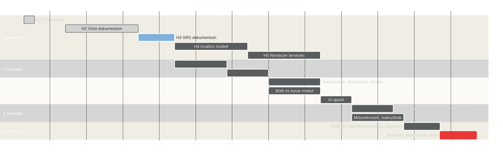
/api/admin/statisztikak).